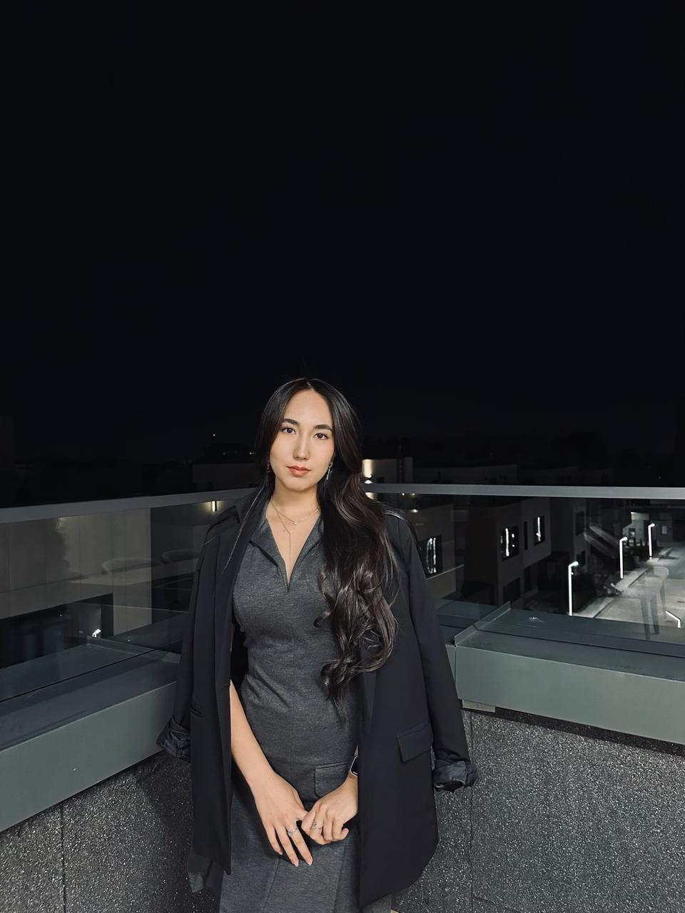
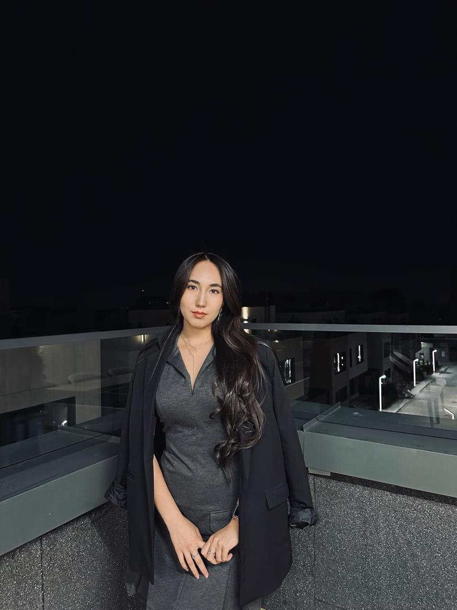

Home
 

Biography
My name is Kamila. I am 21 years old. I am a third-year KBTU student, majoring in IT Management. I was born in Shymkent city and lived there until I graduated from high school at NIS. My interest in studying programming began in the 10th grade. Since high school, I have been learning C#, HTML, JavaScript, and CSS, and by the 12th grade, I had firmly decided that I would apply to a technical university to pursue an IT degree.
At the moment, I have many interests and areas that I want to explore in depth. I'm currently trying my hand at various fields, such as UX/UI design, frontend development, Python, C++, 1C, and more. After studying all these areas, I will decide which one I want to focus on the most and where I can excel the best.
Hobbies
Mountain hiking
Archery

Aerostretching
Fitness boot camp
Swimming

Boxing
Interesting Facts
Sports and education are among the main priorities in my life, helping me continuously develop and achieve my goals. I have been involved in sports since the age of 7. I practiced rhythmic gymnastics for 3 years, then after quitting gymnastics, I periodically engaged in dancing until I was 17. For the past 4 years, I’ve been going to the gym intermittently and trying out different fields such as boxing, stretching, and more.
Since childhood, my parents made sure I always studied in the best schools and strived to provide me with a quality education. Starting from the 4th grade, I attended educational courses. Up until high school, I struggled with math, so I consistently took extra courses to better understand it. In high school, I began preparing for exams like IELTS and SAT. Thanks to my parents, who started preparing me from the 4th grade, and my own perseverance despite the challenges, I was accepted into one of the best schools in Kazakhstan and after graduation, I won scholarships to 4 international foreign universities.
Initially, because my mother is an English teacher, I excelled in languages and thought I would become a translator in the future. At the age of 18, I started teaching English to young children. However, in high school, I developed an interest in IT, especially after recognizing the potential of this field.
Contact Me